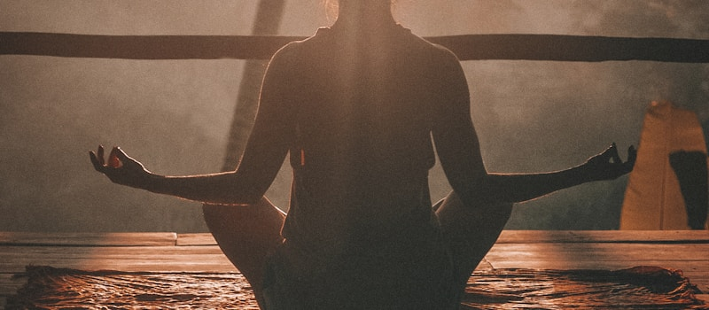

МЕДИТАЦИЯ НА РАССВЕТЕ
Начните день с 10-минутной практики. Сядьте удобно, закройте глаза, следите за дыханием. Наблюдайте, как солнечный свет наполняет вас энергией и спокойствием.
Начните день с 10-минутной практики. Сядьте удобно, закройте глаза, следите за дыханием. Наблюдайте, как солнечный свет наполняет вас энергией и спокойствием.

Техника "Квадратное дыхание" успокаивает ум за 5 минут. Вдох на 4 счета, задержка на 4, выдох на 4, задержка на 4. Повторите 5-10 раз и почувствуете расслабление.